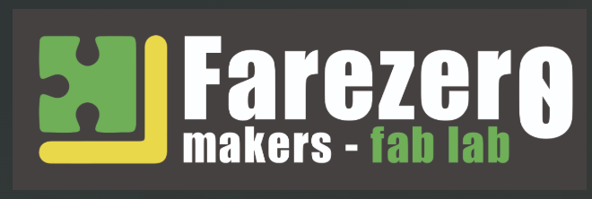
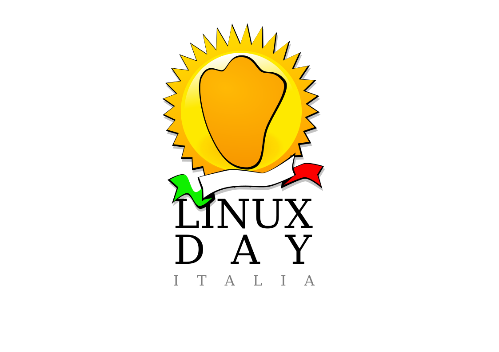

Associazione di promozione sociale · dal 2013 · Alto Salento
Un ecosistema per nerd, maker e smanettoni
Dadi a venti facce, galassie lontane, righe di codice eleganti e macchinari futuristici: se ti pulsa il cuore per una di queste cose, sei già dei nostri.
Eventi
Prossimi appuntamenti
PucciaTech
📅 25 settembre 2026 · ore 19:00 · 📍 Biblioteca «G. Calò»
Open source, tecnologia e convivialità salentina: talk informali, demo e pucce.
Linux Day 2026
📅 24 ottobre 2026 · 📍 Biblioteca Comunale «G. Calò», Francavilla Fontana

01 · Chi siamo
Benvenuti su Fare Zero
Se siete approdati su questa pagina, probabilmente condividiamo la stessa passione per dadi a venti facce, galassie lontane, righe di codice eleganti, macchinari futuristici e tutto ciò che rende meravigliosa la cultura nerd.
Non siamo solo un'associazione: siamo una taverna sicura per avventurieri di ogni livello, un laboratorio di innovazione per menti creative, e un porto franco per chiunque ami sognare a occhi aperti o progettare il futuro tecnologico. La nostra casa è la Biblioteca Comunale «G. Calò» di Francavilla Fontana, dove abbiamo il nostro Fab Lab, organizziamo eventi e apriamo le porte a chiunque voglia imparare e condividere.
La nostra storia
Tutto è iniziato nel 2013 con un gruppo di amici, all'indomani di un convegno sulla presentazione del libro-manifesto «Territorio Zero» che il co-autore Angelo Consoli, direttore del CETRI-TIRES e collaboratore di Jeremy Rifkin, tenne a Francavilla Fontana (BR) nel marzo del 2013. In quell'occasione i futuri fondatori di FareZero.org, tutti appassionati di tecnologia open source, furono folgorati dalle potenzialità che un progetto simile poteva dare: usare la tecnologia libera per rendere il cittadino più indipendente e in armonia con l'ambiente. Il nome «Fare Zero» nasce proprio da lì, dall'idea di emissioni zero, rifiuti zero, chilometri zero.
Da quel «Tiro Salvezza» superato con successo, e dalla prima riga di codice compilata senza errori, siamo cresciuti. Siamo il primo e unico Linux User Group (LUG) ufficiale della provincia di Brindisi, organizziamo il Linux Day dal 2015 e il PucciaTech, abbiamo portato gli Open Data nel Comune di Francavilla Fontana e costruito una stampante 3D alimentata a energia solare che ha ricevuto elogi da tutto il mondo. Abbiamo unito le forze per trasformare le nostre passioni individuali in un progetto collettivo, creando un vero e proprio ecosistema per i nerd, i maker e gli smanettoni di tutto l'Alto Salento.
Un cantiere sempre aperto
La nostra sede in Biblioteca è un cantiere sempre aperto di idee, dadi che rotolano e repository in continuo aggiornamento. Ecco cosa troverete varcando la nostra soglia:
- Innovazione e Open Source: software libero, Linux Day, PucciaTech, Install Party, hackathon, privacy digitale ed etica informatica.
- Fab Lab: stampanti 3D, taglio laser, elettronica, postproduzione e prototipazione.
- Giochi di ruolo e da tavolo: Bibliogame Night, campagne di D&D, Gameathlon e serate ludiche.
- Videogames e sviluppo: dal retrogaming all'indie dev, fino allo sviluppo videoludico.
- Eventi e workshop: formazione nelle scuole, incontri con autori, bootcamp di programmazione.
Crediamo fermamente che la conoscenza, che si tratti della lore di Star Wars o del codice sorgente di un nuovo programma, sia fatta per essere condivisa.
Qui non facciamo test d'ingresso: non importa se sai a memoria l'albero genealogico dei Targaryen, se sei un maestro di Python, o se hai appena formattato il tuo primo PC. Il nostro obiettivo è promuovere la socialità, la curiosità intellettuale e l'inclusione attraverso la passione condivisa. Se hai voglia di imparare, divertirti e rispettare gli altri, sei già uno di noi.
02 · Fab Lab
Dove l'idea diventa realtà
Immagina un luogo dove puoi entrare con un'idea in testa e uscire qualche ora dopo con un prototipo funzionante tra le mani. Un posto dove professionisti, studenti e semplici curiosi condividono macchinari avanzati, conoscenze e, soprattutto, la passione per il «creare».
Il termine Fab Lab è l'abbreviazione di Fabrication Laboratory. Nato da un'idea del prof. Neil Gershenfeld al MIT nei primi anni 2000, oggi è una rete globale di laboratori aperti al pubblico, uniti dalla filosofia dell'open source e della condivisione della conoscenza.
Stampanti 3D
Cinque stampanti FDM e a resina per creare oggetti tridimensionali strato dopo strato.
Taglio laser
Taglia e incide con estrema precisione legno, plexiglass, pelle e cartone.
Elettronica
Postazione con Arduino, Raspberry Pi e microcontrollori per rendere intelligenti gli oggetti creati.
Postproduzione
Fresa e strumenti di finitura per rifinire, assemblare e completare ogni progetto.
Il nostro percorso
Il Fab Lab di Fare Zero nasce nella Biblioteca Comunale «G. Calò» di Francavilla Fontana. Già nel 2013 abbiamo costruito la nostra prima stampante 3D partendo da un progetto open source, e l'anno successivo abbiamo realizzato la 3D SolarPrint: la prima stampante 3D off-grid al mondo alimentata interamente a energia solare, un risultato che ci ha portato elogi da tutto il mondo, persino da Jeremy Rifkin.
Non è un caso che l'Italia sia la patria di Arduino, la piattaforma hardware open-source che ha rivoluzionato la prototipazione elettronica. Il nostro laboratorio segue la stessa filosofia: unire la tradizione manifatturiera del «saper fare» con l'innovazione digitale.
Perché conta davvero
- PMI e startup: prototipano nuovi prodotti a costi accessibili prima della produzione in serie.
- Educazione: avvicina i giovani alle materie STEM con il learning by doing.
- Sostenibilità: dalla 3D SolarPrint in poi, sperimentiamo soluzioni a basso impatto ambientale.
Non è necessario essere un ingegnere o un programmatore esperto: il nostro Fab Lab è pensato per chiunque abbia voglia di conoscere e passione nel fare, grazie a professionisti del settore e a una community viva e in costante crescita.
03 · Open Source
Codice libero, costruito insieme
L'Open Source non è solo un modello di licenza software: è un modo di pensare e di vivere la tecnologia. Fare Zero crede nel promuovere, difendere e diffondere questa cultura. La tecnologia deve essere accessibile, trasparente e, soprattutto, costruita insieme.
A differenza di molte realtà, la nostra community non vive solo sui server: si incontra, discute e crea.
Linux Day & PucciaTech
Organizziamo il Linux Day dal 2015 e il PucciaTech, il format che unisce open source e convivialità salentina.
Open Data
Abbiamo portato gli Open Data nel Comune di Francavilla Fontana: AlboPOP, formazione studenti e dataset pubblici.
Formazione nelle scuole
Collaboriamo con l'ITIS Fermi e le scuole del territorio: I-Week, Computer Science Unplugged, alternanza e workshop.
LUG ufficiale
Primo e unico Linux User Group ufficiale della provincia di Brindisi. Install party, hackathon e supporto reciproco.
Perché entrare nella nostra associazione
Far parte della nostra realtà significa smettere di essere un semplice utente e iniziare a essere un contributore. Nel 2015 abbiamo organizzato il Makerinff, portando nella scuola Montessori di Francavilla speaker di rilievo internazionale nel campo della libertà informatica.
- Migliora le tue competenze: lavora su progetti reali insieme a persone più esperte.
- Fai networking: incontra professionisti tech, studenti brillanti e aziende dell'ecosistema libero.
- Hai un impatto reale: codice, documentazione ed eventi che coinvolgono il territorio e le istituzioni.
Non importa quale sia il tuo livello di esperienza o il tuo linguaggio di programmazione preferito. Se hai voglia di imparare e di condividere quello che sai, la nostra porta è aperta.
04 · Nerd Space
Il gioco come momento di ritrovo
Conosci quella sensazione unica che si prova aprendo la scatola di un gioco nuovo, o il brivido di lanciare un dardo sperando in un 20 naturale? O ancora l'adrenalina di una vittoria all'ultimo secondo, pad alla mano? Se la risposta è sì, preparati a sentirti a casa.
Che tu sia uno stratega calcolatore, un bardo in cerca di gloria o un cecchino da divano: qui c'è un posto a sedere che ti aspetta.
Giochi da tavolo
Dal fascino senza tempo dei grandi classici ai titoli più moderni e complessi. Party game per rompere il ghiaccio, Eurogame per far fumare il cervello a suon di gestione risorse, American pieni di miniature e colpi di scena. Non sai le regole? Nessun problema: alla nostra Bibliogame Night mensile c'è sempre qualcuno pronto a spiegarle.
Giochi di ruolo
Prendi una matita, dei dadi poliedrici e la tua immaginazione. I nostri Master ti guidano in mondi incredibili, dungeon oscuri e galassie lontane: Dungeons & Dragons, Cyberpunk, il Richiamo di Cthulhu, Vampiri e tantissimi sistemi indie.
Videogames
Per chi ha i riflessi pronti e ama la luce dei monitor. Il Gameathlon e le nostre serate di gaming sono il posto giusto per sfidarsi: tornei di picchiaduro, sessioni cooperative e grandi serate di retrogaming.
Molto più di una semplice partita
Perché unirti a noi e non giocare semplicemente da casa? Perché il gioco è prima di tutto condivisione. Venire nella nostra associazione significa staccare la spina dalla routine quotidiana, conoscere persone nuove, confrontarsi e stringere amicizie che spesso vanno ben oltre il tavolo da gioco.
È il luogo perfetto per testare quel gioco che hai comprato ma per cui non trovi mai il gruppo giusto, o per scoprire passioni che non sapevi di avere.
Non importa il tuo livello di esperienza: i veterani sono sempre felici di iniziare i novizi, e chi è alle prime armi porta sempre una ventata di freschezza.
L'unica regola ferrea che abbiamo è il rispetto reciproco, e forse non rovesciare le bibite sui tabelloni.
Entra in partita05 · In giro per la Puglia
Fare Zero Makers on tour
La nostra missione è semplice: connettere le persone attraverso il potere del gioco. Portiamo ovunque una vera e propria Play Room mobile, carica di giochi da tavolo, giochi di ruolo, dadi, carte e tanta voglia di stare insieme. Che tu sia un master esperto o un curioso alle prime armi, abbiamo il tavolo giusto per te.
Ci muoviamo per la Puglia e i territori limitrofi per trasformare piazze, festival, scuole, biblioteche e parchi in spazi di socializzazione pura.
Play Room per tutti
Centinaia di scatole pronte da intavolare: party game veloci, giochi strategici, grandi classici e ultime novità editoriali.
Sessioni di GDR
Campagne brevi, one-shot e introduzioni ai sistemi più famosi (D&D, Pathfinder, Call of Cthulhu) e alle chicche indie.
Master esperti
Odi leggere i regolamenti? Ci pensiamo noi: ti siedi, ti rilassi e il nostro team ti spiega le regole in pochi minuti.
Eventi su misura
Collaboriamo con comuni, festival nerd, fiere e realtà locali per creare eventi ludici unici e aggregativi.
Il gioco è una cosa seria, ma ci si diverte un sacco. Intorno a un tavolo siamo tutti uguali, uniti dalla voglia di esplorare, sfidarci e ridere.
Vieni a giocare
Controlla la mappa, trova la tappa più vicina a te e raggiungici. L'accesso alla nostra Play Room è gratuito.
Invitaci nel tuo comune
Sei un organizzatore di festival o gestisci uno spazio culturale? Porta la nostra ludoteca itinerante nel tuo territorio: logistica, tavoli, giochi e animazione, ce ne occupiamo noi.
Diventa un Master Makers
Vuoi salire di livello diventando un Master? Unendoti alla community potrai imparare, confrontarti con altri master e fare esperienza con tanti player pronti a partire per nuove avventure.
06 · Contatti
Sali a bordo
Le porte della nostra sede sono sempre aperte. Vuoi partecipare a un evento, portare la Play Room nel tuo comune o metterti al lavoro nel Fab Lab? Scrivici, torniamo da te al più presto.
info@farezero.org
+39 327 363 3631
Sede
Biblioteca Comunale «G. Calò»
Via Barbaro Forleo, 1
Francavilla Fontana (BR)